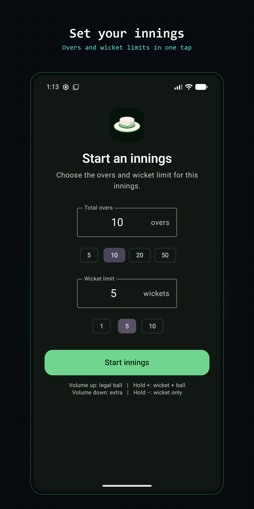
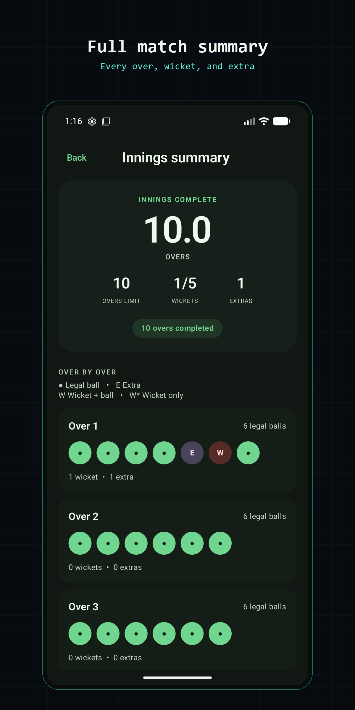

Umpire - Cricket Counter
Keep a six-ball cricket innings moving without looking away from play. Umpire tracks legal deliveries, overs, wickets, and extras, with matching controls on the screen and the phone's volume buttons.
01 / Set up
Start an innings
Choose the total overs and the wicket limit, then select Start innings. The counter treats every over as six legal balls and ends the innings when either limit is reached.
- 1 Set the number of overs for the innings.
- 2 Set how many wickets will end the innings.
- 3 Start counting. The screen stays awake while an innings is active.

02 / Record
Record every delivery
Each action has both an on-screen button and a hardware shortcut. Use whichever is easier while watching the bowler and batter.
Legal ball
VOL +Short-press Volume Up. Adds one legal delivery and advances the over.
Extra
VOL −Short-press Volume Down. Records an extra at that point without adding a legal ball.
Wicket + ball
HOLD +Hold Volume Up. Adds a wicket and counts the delivery as a legal ball.
Wicket only
HOLD −Hold Volume Down. Adds a wicket without counting a legal delivery.

03 / Follow
Read the match at a glance
- The large circular tracker shows the current over and ball, plus the innings limit.
- Wickets and extras are always visible inside the tracker.
- The current-over row shows each event in the order it happened, including extras between legal balls.
- The delivery-history strip separates completed overs. Swipe right to inspect earlier overs.
Made a mistake?
Select Undo last to remove the latest event and restore the previous count.
Need to stay in the app?
Use the lock icon for Android screen pinning. Leaving the app then requires the device's fingerprint, PIN, or pattern.
04 / Review
Finish and review the innings
When the over limit or wicket limit is reached, open the match summary. It shows the final overs, wickets, and extras, followed by every delivery grouped over by over.
You can also choose End to finish early. The active innings and undo history are saved automatically on the device, so reopening the app restores the counter where you left it.
Privacy
Umpire works without an account or internet access. Match information stays on the device. Read the privacy policy.
